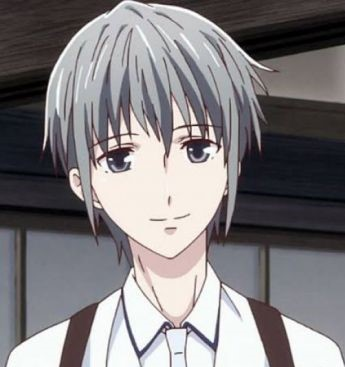
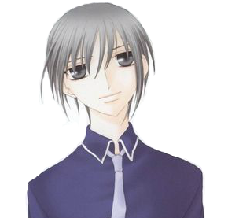
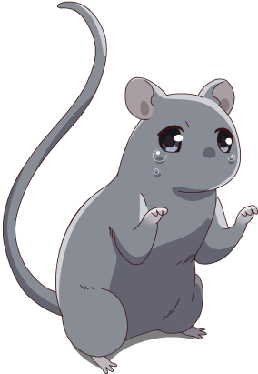

|
Age: 16-18 Hair color: Gray Eye color: grayish purple He is the second main protagonist. He is the Rat in the chinese zodiac. He is the prince of the high school that he goes to, according a group of girls who created a group called Prince Yuki Fanclub. It is a group that is dedicated to Yuki's beauty. He doesn't know about the club. Yuki is trying to figure out who he is throughout the show/manga. He has to overcome obstacles to get where he wants to be. He is one of the higher up zodiac members and is expected to do things that he does not want to do. |
 |
|  | The Rat  |